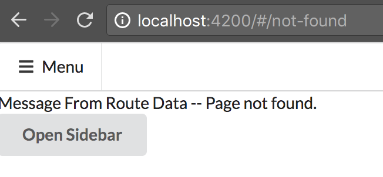

RouteParams QueryParams Fragment ConvertNum ChildRoute QueryHandling WildCard NoFound(err)Page RouteGuard-CanDeactivate-CanActive-CanLoad
Redirect ResolveDynamicData RouteGuard(service and child) LocalStrategy
when component is main compo of a module, donot need router-outlet, but if it is a compo inject into another compo, then
you should use router-outlet
the place to use router-outlet is same position to use component (app-nested-content) --> if you want to go there (the
next compo), add <a [routerLink]="['/next-compo']"> on top of it.
Go Next Component
Usually, if we give CanActivate guard to parent route, all child routes would be blocked. Thus, it is better us CanActivateChild,
block children, not parent.
Mention one thing --> Due to service donot have meta data (html, css, js), so if you want to inject it into Module or Component,
you should give @Injectable(). But, if you want to inject a service into another service, donot need Injectable.
To support old browser, we have to add old hash route (route-local-Strategy) in root route module.

you can see # in the url. In this way, webserver will only care the thing before /#, so it will let webserver read correct
route, because webserver will use localhost://4200/ as root and replace it with server/, then pluse route --> server/route.